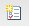

Le menu principal¶

Figure 2 : Menu principal.
Le menu principal affiche le contenu de chaque objet disponible sur l’arborescence de l’application ainsi que la liste des projets et leurs vues prototypes.
Pour afficher le contenu d’un objet du menu, double-cliquez sur celui-ci. Il sera ouvert comme un nouvel onglet dans la grille principale.
Il est possible de cacher le menu principal en cliquant sur le bouton  .
.
Pour réafficher le menu principal, cliquez sur le bouton  .
.
Les fonctions du menu principal¶

Figure 3 : fonctions du menu principal.
1- Pour déplacer un dossier, cliquez sur celui-ci, glissez-le jusqu’au l’endroit voulu (sans relâcher la souris).
2-  : option pour créer un nouveau dossier dans l’arborescence.
: option pour créer un nouveau dossier dans l’arborescence.
3-  : option pour créer une nouvelle vue sur une entité. Sélectionnez le dossier où vous voulez placer la nouvelle vue, et remplir les champs :
- text : le nom de la vue;
- option : cherchez l’entité à partir de la liste des options;
- iconCls : nom de l’icône;
- qtip : pour créer un tooltip (infobulle).
- qtitle : pour le titre à afficher lorsque la vue est ouverte dans la grille principale.
Les deux premiers champs sont obligatoires, les autres sont optionnels.
4-  : option pour modifier le nom de l’objet sélectionné.
: option pour modifier le nom de l’objet sélectionné.
5-  : option pour supprimer un objet dans l’arborescence. L’objet sera supprimé du menu (pas de la BD).
: option pour supprimer un objet dans l’arborescence. L’objet sera supprimé du menu (pas de la BD).
6- : option pour enregistrer l’état actuel du menu principal. Toutes les modifications (personnalisations) réalisées dans l’arborescence seront enregistrées. Si vous n’enregistrez pas vos modifications, l’application chargera toujours le menu par défaut (ou le dernier menu enregistré).
7-  : option pour actualiser le menu (retourne le dernier menu enregistré).
: option pour actualiser le menu (retourne le dernier menu enregistré).
8-  : option pour réinitialiser le menu (retourne le menu par défaut).
: option pour réinitialiser le menu (retourne le menu par défaut).